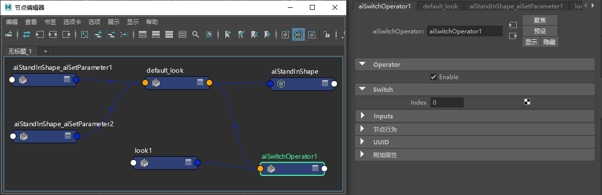
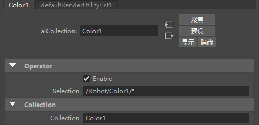
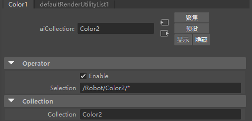
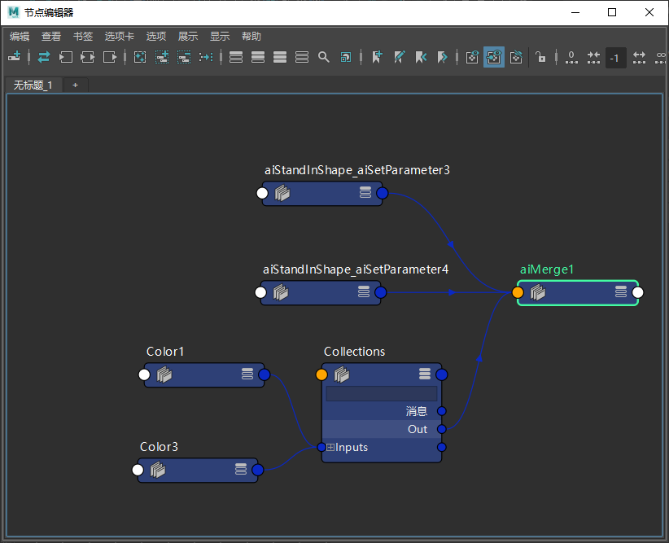
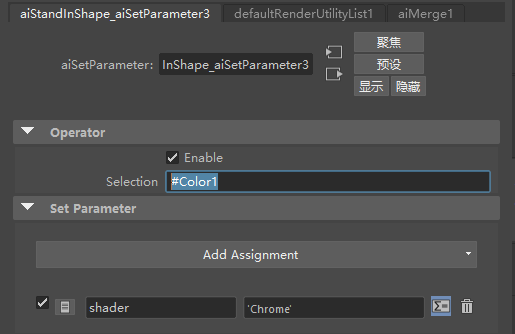
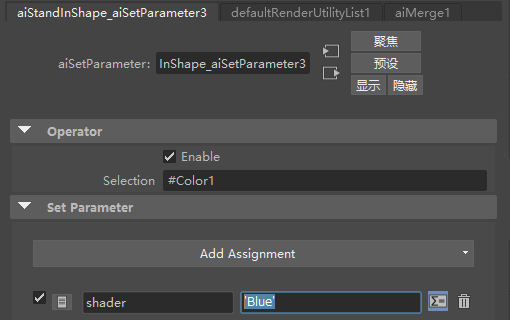
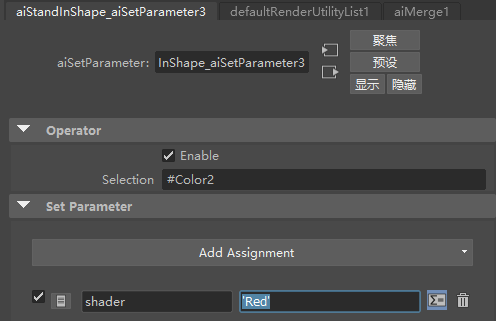
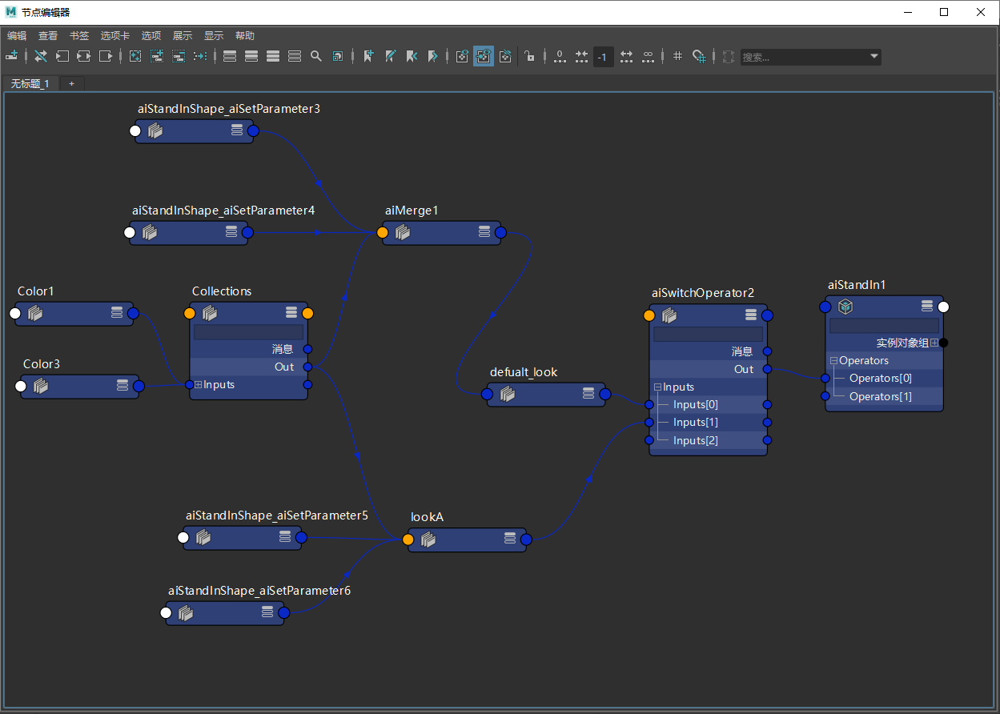

本教程承接上一个教程页面。它将介绍如何使用多个着色器为一个场景创建多个外观。我们将创建一个*运算符*图表网络，它可以帮助我们在不同的指定或外观之间切换，并提高美工人员的外观制作工作效率。

外观制作“包含图表”(Include Graph)运算符 ->“切换”(Switch)运算符
下面我们开始构建图表。在这种情况下，建议使用*集合(Collection)*运算符。如果您的外观材质指定使用相同的层级点进行材质绑定，“集合”(Collection)运算符可以从一个“集合”(Collection)节点控制指定更改。我们可以执行一次此操作，然后对每个外观重用。

“集合”(Collection)运算符设置为 Color1


Collections ->“合并”(Merge)运算符
接下来，我们将更改材质指定以开始使用 Collections。

现在，我们可以通过复制可重用的现有“设置参数”(Set Parameter)运算符（也可用于不同角色）创建多个外观。


最终的运算符图表应类似下图：

现在您可以更改“切换”(Switch)*输入数以在 *default_look 与 look1 之间交替。对更多外观制作重复以上步骤，但选择不同颜色的着色器（即黄色和绿色）。
要下载最终场景文件，请单击此处。